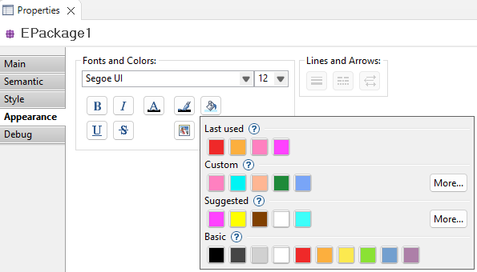

Diagram Element Color Management
There are 3 menu items that allow to change the color of an element:
-
Font Color menu allows you to change the font color of the label of the selected element(s).
-
Fill Color menu allows you to change the background color of the selected element(s).
-
Line Color menu allows you to change the border color of a Node or Container, or the color of the Edge for the selected element(s).

When one of the color-change menus is clicked, a popup dialog with color palettes appears, allowing you to choose which color to apply among four categories provided:
-
Last used colors category displays the ten last colors used by the user.
-
Custom colors category displays the ten first colors defined by the user. Additional colors can be created by clicking on the "More..." button. Users can also reorder the set of custom colors, choosing which colors to display in the popup dialog.
-
Suggested colors category displays the ten "preferred colors" defined by the user which are a subset of the colors defined in the Viewpoint Specification Model (odesign). This category is not displayed if no colors are defined in the VSM. Users can modify their ten "preferred colors" by clicking on the "More..." button. Here's an example of colors defined in the VSM: !images/VSM_user_fixed_colors.png!
-
Basic colors category displays ten application-defined colors for use in most contexts. This color palette cannot be modified by the user.
|

|
Custom and
Suggested colors categories are persisted in the aird file.
Last used colors category is persisted in the workspace preferences.
|
|
|
The colors saved for "Custom" and "Suggested" categories are persisted
separately for "Font Color", "Fill Color" and "Line Color".
This is useful because you usually different colors for label and background for example.
|